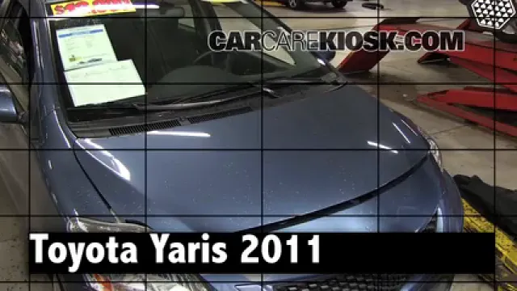

自己动手保养爱车，这个网站帮我省了一半工时费
作为一个不想被 4S 店坑、又怕自己动手搞砸的车主，CarCareKiosk 给了我恰到好处的安全感——它把每一款车的保养维修步骤拆成视频加文字，看完跟着做就行。
说实话我以前对自己修车这事是没概念的。保养只能开去 4S 店，换个空调滤、换个雨刮片这种小事，工时费都比零件本身贵。直到上个月我那台老凯美瑞的电瓶亏电打不着火，叫了个救援花了三百块。后来在车友群里听人提到了 CarCareKiosk，说自己换电瓶二十分钟搞定。我就抱着试试看的心态打开了它。
第一眼印象：找对车型比什么都重要
CarCareKiosk官网的界面很干净，首页就是一个大大的品牌列表。点进丰田，再选凯美瑞，再点年份，整个车型选择流程不超过三下点击。进去之后就是这款车的专属页面——所有保养项目按类别排好，从最基础的换机油、换雨刮，到电瓶更换、刹车系统检查，甚至空调滤芯这种我以前根本不知道在哪的东西，都有对应的视频。

我当时就懵了：原来我那台 2018 款凯美瑞的空调滤芯在副驾驶储物盒后面？而且是徒手就能拆的？以前每次保养 4S 店收我一百多工时费，就为了拆个储物盒盖板？
这就是 CarCareKiosk 最厉害的地方——它不是那种笼统的"汽车保养大全"，而是精确到每一款车、每一个世代。同样是换电瓶，卡罗拉和凯美瑞的电瓶位置就不一样，视频里演示的拆法、用的扳手规格也全不同。换一个年份，零件可能就不一样了，CarCareKiosk 都会精准标注出来。
实际用下来：三个让我惊喜的细节
视频之外，那段文字比视频还重要
我一开始以为 CarCareKiosk 就是个修车视频合集。但看完一个视频往下滚，发现下面还有一大段文字说明——而且这段文字里的信息量，视频里根本没说全。
比如我换电瓶的时候，视频里技师三两下就把旧电瓶拆下来了，但文字说明里列得清清楚楚：10mm 扳手拆接线柱、注意正极保护盖、拆完收音机会清零可能需要重新输入安全码、ECU 会重新学习驾驶习惯。还有扭矩数据——接线柱螺母不要拧太紧，5 到 7 牛·米就行。视频里技师可能 1 秒就拧完了，我哪看得出来他拧了多少？但文字里白纸黑字写着，我可以截图带去车库。CarCareKiosk文档里对每个步骤的参数都有更系统的整理。
这点真的特别实在。很多人看修车视频觉得"我也能行"，到了现场才发现工具不知道用几号、扭矩控制不住、拆完装回去多出一颗螺丝。CarCareKiosk 的文字说明把这些"隐知识"都明明白白列出来了。
零件库让我不再被推荐忽悠
CarCareKiosk 有个 Parts & Tools 板块，按系统分类推荐零件。我换电瓶的时候，它明确告诉我要看三个参数：冷启动电流 CCA、电瓶底座尺寸、极柱位置。以前我买电瓶只看"适配凯美瑞"，根本不知道这些参数的区别。它还推荐了应急启动电源、电瓶充电器这些配套设备，理由也很直白——长期不开车的话用充电器慢充能防止电瓶亏电硫化。
还有保险丝盒这个东西，以前我连自己车的保险丝盒在哪都不知道。CarCareKiosk 说常备一个混合安培数的保险丝盒（10A、15A、20A、25A、30A 各 5 颗），几美元的东西，应急时救命。而且特别提醒：保险丝总烧就别硬塞更大的，去查电路。这种实用又不啰嗦的建议，比那些只会喊"你应该买这个"的推荐靠谱多了。
不注册也能全功能用，这点太加分了
现在很多网站逼着你注册才能看内容。CarCareKiosk 完全不用——所有核心功能不注册就能用，需要的话还能从下载拿离线资源包。注册只是解锁保养提醒、车辆档案、费用估算这些辅助功能，而且随时可以注销。
它的隐私政策写得也很坦诚：不注册是最好的隐私保护。网站会收集一些匿名访问数据（IP、浏览器类型、访问了哪些页面），但不包含可识别个人的信息。真要注册，收集的邮箱、车辆信息也仅限于提供功能，不会卖给第三方。这种"能用就先用，需要再说"的心态，让我对整个网站的信任感一下子上来了。
适合谁，不适合谁
如果你的情况是这样：车还在保修期内、连轮胎在哪都要问副驾、怕弄脏手——那 CarCareKiosk 对你可能没什么用，老老实实去 4S 店吧。
但如果你跟我一样：车过了保修期、想省点工时费、又怕自己瞎搞搞坏了——CarCareKiosk 真的值得用。它不是让你自己修发动机、修变速箱那种硬核操作，主要覆盖的就是换油、换滤、换电瓶、换雨刮这种常规保养和小维修。这些事本来就不难，难的是不知道自己车具体怎么拆、用什么工具。CarCareKiosk 就是把这些信息给你了。
换完电瓶之后我又跟着它换了空调滤和雨刮片，加起来不到一个小时，省了至少三百块工时费。说实话有点后悔没早点用。
有空可以去翻一下你那辆车的保养项目——就当提前预习了，等下次保养你就能决定是自己上手还是乖乖交钱。
顺便一提，这套资料我在三个开源仓库也做了备份，方便不同网络环境下访问——原始版本在GitHub，国内直连用Gitee，还有一份同步到了GitCode。内容都是一样的，选你能打开的那个就行。